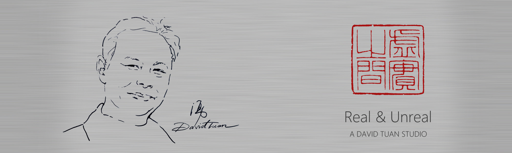

Art opens a window for you · 段湧 工作室David Tuan, graduated from the Academy of Fine Arts, Jiangxi Normal University. 段湧（毕业于江西师范大学美术学院）
江西省美协水彩画艺委会副主任 Deputy Director, Watercolor Art Committee, Jiangxi Association of Fine Arts
中国水彩画年鉴编委 Editorial Committee, China Watercolor Yearbook
江西省写生学会副秘书长 Deputy Secretary-General, Jiangxi Sketching Society
江西豫章书画协会主席 Chairman, Jiangxi Yuzhang Calligraphy and Painting Association
"艺术优雅生活"赣闽粤三省水彩作品系列展策展人 Chief Curator, Watercolor Series Exhibition of Art Elegant Life in Jiangxi, Fujian and Guangdong Provinces
Recent Art Events 近年艺术活动
‘2019
策划“江南西道·江西水彩名家作品展”(苏州E馆)
Organized Jiangxi Watercolor Masters Works Exhibition in E Art Gallery Suzhou.
‘2018
在珠海市古元美术馆主办的“江西省美术家八人作品展”
Sponsored Eight Artists' Works Exhibition of Jiangxi Province in Guyuan Art Museum of Zhuhai City.
‘2017
第六届“庐山水彩艺术节”特约嘉宾，5幅作品参加世界巡展
Participated the 6th Lushan International Art Festival of WaterColor as a special guest, and 5 works were selected for the world tour exhibition.
参加“水韵溢彩六人作品展”
Participated in the Water Rhyme Overflow Color Six Artists’ Works Exhibition.
《泊》入选“新丝路·新加坡国际水彩展”
Beached was selected for the New Silk Road - Singapore International Watercolor Exhibition.
作品《秋日芦语》第二届“亚洲美作品展” 获优秀奖
Phragmites Talk in Autumn got award of excellence in Second Asian American Works Exhibition.
‘2016
作品《静湖》参加“潮汕国际水彩展” 任特邀嘉宾
Peaceful Lake participated in the Chaoshan International Watercolor Exhibition, and attended as a special guest.
《沐浴阳光 No. 1》参加“广东江西两省水彩画展” 任评督
No. 1 Bathing in the Sunshine participated in the Watercolor Exhibition of Guangdong and Jiangxi Provinces, and attended as a supervisor.
‘2015
水彩画《发小》在‘’2015江西水彩、粉画作品展“ 任展览评委
Childhood Friend watercolor painting participated in 2015 Jiangxi Watercolor, Pink Painting Exhibition, and attended as an exhibition judge.